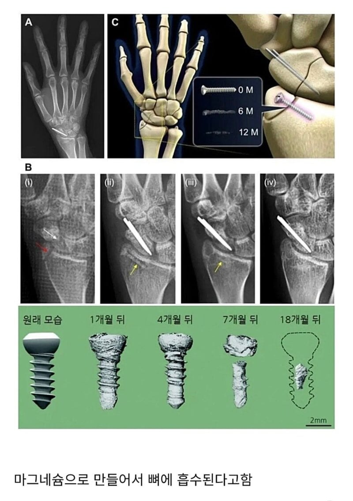

NASA가 아니였구나

NASA가 아니였구나
칼슘으로 만들면 뼈가 튼튼해지겠네!
마그네슘 넣으면 피에 닿아서 폭발 하는거 아냐? ㅋㅋㅋ
마그네슘 합성물이겠지 설마 쌩 마그네슘이겠음 ㅋㅋㅋㅋ
제작자 : 어?
와우 천재네 둘다
생 마그네슘은 그 정도로 반응성이 강하지 않아
소금 나트륨인데 물에 넣으면 안되는거 아님?

바나나에 마그네슘 있대
정보
2019년 혹은 그 이전 중국 금속학회지에서 발표한 내용임
참고자료
https://www.dongascience.com/ko/news/32575
중국 아니고 독일/미국 등에서 훨씬 오래전부터 연구/개발되던 주제임 (생분해성 임플란트 Mg 합금 주제로 따질때..)
상용품도 있고 우리나라도 상용화해서 파는 회사도 있음(지금도 있는지 몰겠지만)
마그네슘 따로 안 먹어도 되는거네 .
눈밑 떨림 당분간 없음
눈 밑 떨림 없어지겟네
영양제도 이제 이렇게 먹으면되냐
비타민나사좀 박아주세요
와.............
나 어릴때 팔 골절되서 4개 부러지고 7개 금갔는데 심 몇개를 박고 철사같은걸로 봉합했었는데.........
심뺀다고 또 수술받았었음...... 개고생했었지..
저거 요로결석생기는거아니냐
메탈그레이몬은 영업종료다
ㄷㄷ
하나가 되자...."Make Us Whole"